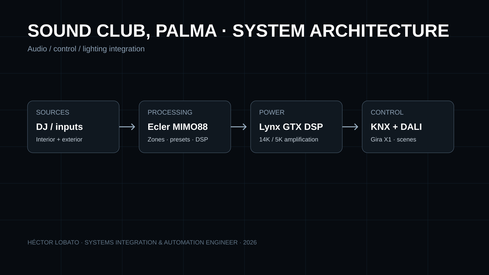

Ubicación
Puerto Deportivo de Palma
HOSPITALITY / INTEGRATED SYSTEMS
Un único sistema operativo para audio profesional, iluminación, automatización y experiencia de usuario.
Varias disciplinas —audio, iluminación, control, red y operación— tenían que comportarse como una única instalación, con escenas, zonas, limitación, interfaces y puesta en marcha coordinadas.

01 — ARQUITECTURA
Separar procesamiento, control y potencia para que el diagnóstico, mantenimiento y operación cotidiana sean claros.
Zonas, presets y escenas accesibles desde interfaces dedicadas, con una arquitectura documentable y escalable.
02 — VIAJE DEL PROYECTO
Zonas, operación, restricciones acústicas y posiciones técnicas.
Routing, equipos, grupos, escenas, rack, control e interfaces.
Electricidad, cableado, herrería, iluminación, acústica y documentación.
DSP, grupos de audio, KNX/DALI, escenas y paneles de usuario.
Pruebas por zona, regulación, presets, niveles y verificación funcional.
Planos, listados, esquemas, incidencias, cambios y material municipal.
03 — XXXIA STUDIO / VISUAL DEVELOPMENT
XXXIA STUDIO transforma fotografías, vídeos, renders y documentación técnica de este proyecto en storyboards, exploded views y piezas motion claramente etiquetadas como visuales generadas.
Building Overview · Building Exploded · DJ Booth Exploded · Lighting 2300K · Programming & Control.
Briefs, prompts, storyboards, manifest y control de versiones archivados en GitHub bajo XXXIA STUDIO.
04 — REACT VISUALS / PLANOS + VÍDEO
Ya están incorporados cuatro boards XXXIA, tres diagramas SVG versionados y tres vídeos reales del proyecto. Los planos actuales representan lógica y recuentos documentados, pero se etiquetan como GENERATED_DIAGRAM · NOT AS-BUILT hasta disponer del CAD/PDF verificado.
Vídeo real aportado desde el proyecto. Se mantiene separado de los motion generados por XXXIA.
848 × 480 · 93.3 s
Control / espacio / operación.
Visor interactivo por tipo de activo: BOARD · PLAN · SYSTEM · VIDEO · MOTION, con clasificación de evidencia y estado de archivo.
La skill específica del proyecto fija inventario, identidad pública, rutas, media contract y reglas de promoción a VERIFIED_DRAWING.